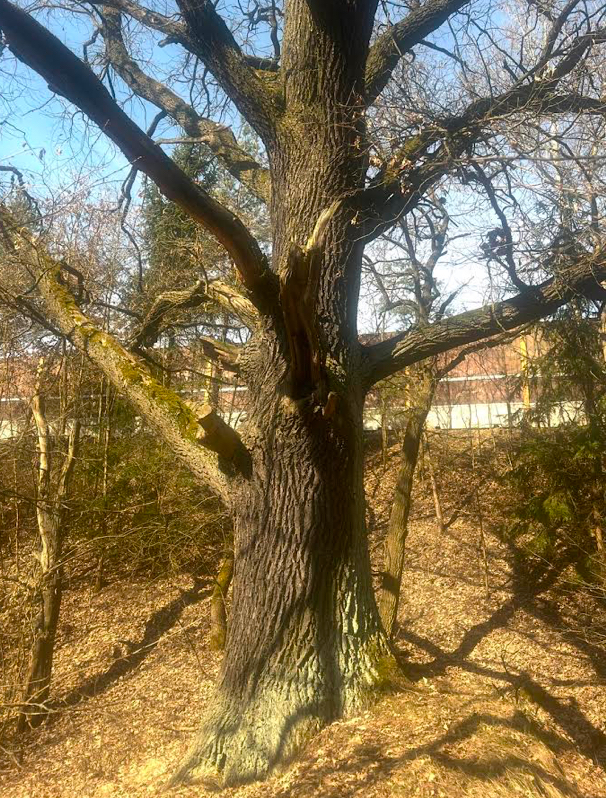
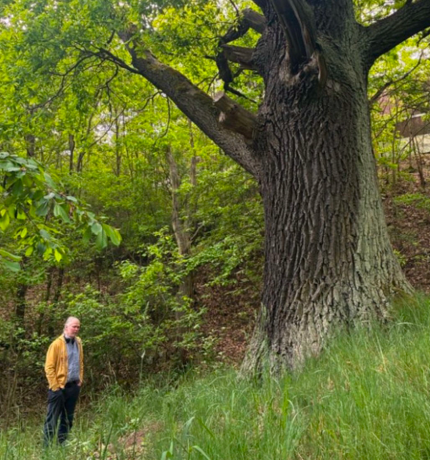
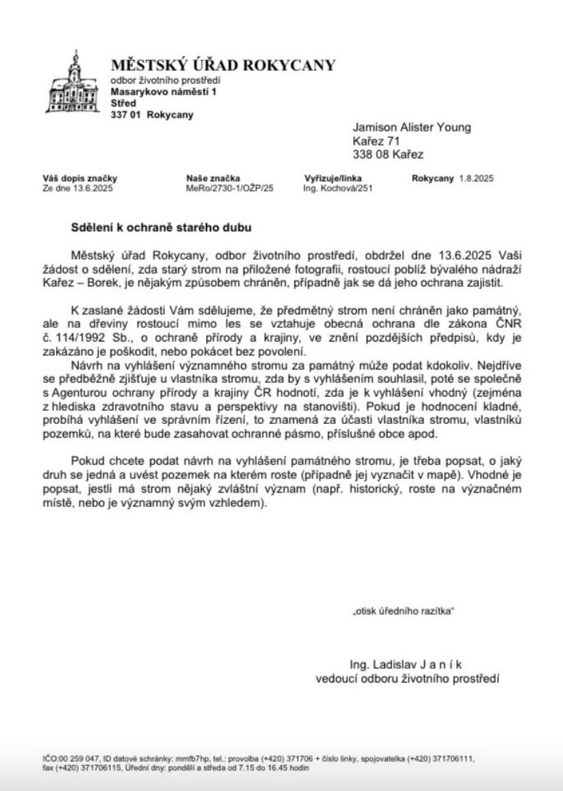

Where the documented protection story begins

The Rokycany Environmental Department confirmed that the oak was not at that time formally designated as a památný strom (memorable/protected tree), but that it already received general protection as a tree growing outside a forest under Czech nature-protection law. The letter states that damaging the tree, or felling it without the required permission, is prohibited.
Rokycany also explained the route toward formal designation: anyone may submit a proposal; the owner's position is first established; AOPK ČR may assess whether the tree is suitable, including its health, age and condition; and the proposal should identify the species, parcel/location and any special significance, including historical significance.
Protection timeline
Kateřina Bolečková of Nadace Partnerství responded to the initial inquiry, described the oak as a pozoruhodný dub — a remarkable oak — and advised on routes toward professional assessment and protection.
An inquiry was sent to the Municipal Office of Rokycany concerning protection of the tree near the former Kařez–Borek railway station. The later Rokycany letter records this date as the date the request was received.
Rokycany issued its formal written response, establishing the oak's existing general legal protection and describing the procedure for seeking designation as a památný strom.
Fred Chvátal wrote that he would ask friends and former colleagues at AOPK whether there was a route to protect the oak.
Fred reported that a former colleague had responded and that help could be offered, subject to more detailed information about the tree.
Fred identified Václava Švantnerová of AOPK as a direct contact and confirmed that communication with her could be in English.
A direct invitation was sent to Václava Švantnerová, thanking her for offering to assess the oak and inviting her to the former Zbiroh railway station site.
A response from Ředitelství silnic a dálnic (ŘSD), dated 24 August 2026, was received concerning the D5 motorway protection zone and the Kařez spatial plan. ŘSD confirmed that the D5 protection zone remains established by law and stated that it does not currently hold documentation explaining the historical routing of the D5 through this area. View the received letter.
{kind=link}
The archive continues to assemble measurements, photographs, historical mapping, correspondence and evidence of the tree's relationship to the surrounding road, railway and industrial landscape.
Why this tree matters
This page is intended to separate established evidence from questions still being investigated. The tree's precise age, its relationship to earlier road alignments, and whether later infrastructure was deliberately designed around it remain research questions rather than settled facts.
The wider landscape
The oak stands within a landscape shaped by the historic Borek industrial complex, the former Zbiroh railway station and later road infrastructure. Its significance may therefore lie not only in the tree itself but also in the continuity of the surrounding landscape.
Evidence being assembled
The working record will bring together present-day photographs, trunk measurements, historical and cadastral maps, road-construction records, aerial imagery, correspondence with public authorities and conservation specialists, and local memories or documentary references concerning the tree.
Where evidence is incomplete, the page will say so. Historical interpretation will be kept separate from confirmed administrative or archival facts.
Connection to the wider archive
Contribute evidence
If you know the history of this oak, have older photographs, maps, memories of the road before reconstruction, documents, measurements or information relevant to its protection, you can send it directly to the archive. Name and email are optional.
Kde začíná doložený příběh ochrany stromu
Odbor životního prostředí Městského úřadu Rokycany potvrdil, že dub v té době nebyl formálně vyhlášen jako památný strom, ale již se na něj vztahovala obecná ochrana dřevin rostoucích mimo les podle českých předpisů na ochranu přírody. Dopis uvádí, že poškozování stromu nebo jeho kácení bez potřebného povolení je zakázáno.
Rokycany rovněž popsaly postup k případnému vyhlášení památného stromu: návrh může podat kdokoli, nejprve se zjišťuje stanovisko vlastníka, AOPK ČR může posoudit zdravotní stav, věk a celkový stav stromu a návrh by měl obsahovat druh stromu, parcelu či umístění a jeho případný zvláštní, včetně historického, význam.
Časová osa ochrany
Kateřina Bolečková z Nadace Partnerství odpověděla na první dotaz, označila dub za pozoruhodný dub a doporučila možnosti odborného posouzení a ochrany.
Na Městský úřad Rokycany byl zaslán dotaz týkající se ochrany stromu u bývalého nádraží Kařez–Borek. Pozdější dopis Rokycan uvádí tento den jako datum přijetí žádosti.
Rokycany vydaly formální písemnou odpověď, která potvrdila existující obecnou právní ochranu dubu a popsala postup při návrhu na vyhlášení stromu za památný strom.
Fred Chvátal napsal, že se obrátí na přátele a bývalé kolegy v AOPK a zjistí, zda existuje cesta k ochraně dubu.
Fred oznámil, že bývalý kolega odpověděl a že pomoc je možná, pokud budou k dispozici podrobnější informace o stromu.
Fred uvedl jako přímý kontakt Václavu Švantnerovou z AOPK a potvrdil, že s ní lze komunikovat anglicky.
Václavě Švantnerové bylo zasláno přímé pozvání k návštěvě lokality bývalého nádraží Zbiroh s poděkováním za nabídku dub posoudit.
Byla přijata odpověď Ředitelství silnic a dálnic (ŘSD), datovaná 24. srpna 2026, týkající se ochranného pásma dálnice D5 a územního plánu obce Kařez. ŘSD potvrdilo, že ochranné pásmo D5 je nadále stanoveno právními předpisy, a uvedlo, že v současnosti nemá k dispozici dokumentaci vysvětlující historické trasování D5 v této lokalitě. Zobrazit přijatý dopis.
Archiv nadále shromažďuje měření, fotografie, historické mapy, korespondenci a další doklady o vztahu stromu k okolní silniční, železniční a průmyslové krajině.
Proč je tento strom důležitý
Cílem této stránky je oddělit doložená fakta od otázek, které se stále zkoumají. Přesný věk stromu, jeho vztah ke starším trasám silnic a otázka, zda byla pozdější infrastruktura záměrně vedena s ohledem na něj, zůstávají předmětem výzkumu, nikoli potvrzenými skutečnostmi.
Širší krajinné souvislosti
Dub stojí v krajině formované historickým průmyslovým areálem Borek, bývalým nádražím Zbiroh a pozdější silniční infrastrukturou. Jeho význam proto nemusí spočívat pouze v samotném stromu, ale také v kontinuitě okolní krajiny.
Shromažďované důkazy
Pracovní archiv bude spojovat současné fotografie, měření kmene, historické a katastrální mapy, dokumentaci k výstavbě silnic, letecké snímky, korespondenci s úřady a odborníky na ochranu přírody a také místní vzpomínky či dokumentární odkazy týkající se stromu.
Tam, kde jsou důkazy neúplné, bude to na stránce výslovně uvedeno. Historická interpretace bude oddělena od potvrzených správních a archivních skutečností.
Propojení s širším archivem
Přispějte důkazy
Pokud znáte historii tohoto dubu, máte starší fotografie, mapy, vzpomínky na silnici před rekonstrukcí, dokumenty, měření nebo jiné informace důležité pro jeho ochranu, můžete je zaslat přímo do archivu. Jméno a e-mail jsou nepovinné.
Wo die dokumentierte Schutzgeschichte beginnt
Die Umweltabteilung des Stadtamts Rokycany bestätigte, dass die Eiche zu diesem Zeitpunkt noch nicht formell als památný strom (geschützter bzw. bemerkenswerter Baum) ausgewiesen war. Sie unterlag jedoch bereits dem allgemeinen Schutz für außerhalb des Waldes wachsende Bäume nach tschechischem Naturschutzrecht. Das Schreiben stellt fest, dass eine Beschädigung oder Fällung ohne erforderliche Genehmigung verboten ist.
Rokycany erläuterte außerdem den Weg zu einer möglichen formellen Unterschutzstellung: Jeder kann einen Antrag stellen; zunächst wird die Haltung des Eigentümers festgestellt; die AOPK ČR kann Gesundheit, Alter und Zustand des Baumes beurteilen; und der Antrag sollte Baumart, Parzelle bzw. Standort sowie eine besondere, einschließlich historische, Bedeutung angeben.
Zeitleiste des Schutzes
Kateřina Bolečková von Nadace Partnerství antwortete auf die erste Anfrage, bezeichnete die Eiche als pozoruhodný dub — eine bemerkenswerte Eiche — und wies auf Möglichkeiten einer fachlichen Begutachtung und des Schutzes hin.
Beim Stadtamt Rokycany wurde eine Anfrage zum Schutz des Baumes nahe dem ehemaligen Bahnhof Kařez–Borek eingereicht. Das spätere Schreiben aus Rokycany nennt dieses Datum als Eingang der Anfrage.
Rokycany erließ eine formelle schriftliche Antwort, bestätigte den bestehenden allgemeinen Rechtsschutz der Eiche und beschrieb das Verfahren für einen Antrag auf Ausweisung als památný strom.
Fred Chvátal schrieb, dass er Freunde und frühere Kollegen bei der AOPK fragen werde, ob es einen Weg zum Schutz der Eiche gebe.
Fred berichtete, dass ein ehemaliger Kollege geantwortet habe und Hilfe möglich sei, sofern detailliertere Informationen über den Baum vorliegen.
Fred nannte Václava Švantnerová von der AOPK als direkten Kontakt und bestätigte, dass die Kommunikation mit ihr auf Englisch möglich sei.
Václava Švantnerová wurde direkt eingeladen, den Standort des ehemaligen Bahnhofs Zbiroh zu besuchen, verbunden mit einem Dank für ihr Angebot, die Eiche zu begutachten.
Eine Antwort der tschechischen Straßen- und Autobahndirektion Ředitelství silnic a dálnic (ŘSD), datiert auf den 24. August 2026, ging zum Schutzstreifen der Autobahn D5 und zum Flächennutzungsplan von Kařez ein. ŘSD bestätigte, dass der Schutzstreifen der D5 weiterhin gesetzlich festgelegt ist, und erklärte, derzeit keine Unterlagen zur historischen Trassenführung der D5 in diesem Gebiet zur Verfügung zu haben. Eingegangenes Schreiben ansehen.
Das Archiv sammelt weiterhin Messungen, Fotografien, historische Karten, Korrespondenz und weitere Belege zum Verhältnis des Baumes zur umgebenden Straßen-, Eisenbahn- und Industrielandschaft.
Warum dieser Baum wichtig ist
Diese Seite soll gesicherte Belege von Fragen trennen, die noch untersucht werden. Das genaue Alter des Baumes, seine Beziehung zu früheren Straßenführungen und die Frage, ob spätere Infrastruktur bewusst um ihn herum geplant wurde, bleiben Forschungsfragen und sind keine feststehenden Tatsachen.
Die weitere Landschaft
Die Eiche steht in einer Landschaft, die durch den historischen Industriekomplex Borek, den ehemaligen Bahnhof Zbiroh und spätere Straßeninfrastruktur geprägt wurde. Ihre Bedeutung kann daher nicht nur im Baum selbst liegen, sondern auch in der Kontinuität der umgebenden Landschaft.
Zusammengetragene Belege
Die Arbeitsdokumentation wird heutige Fotografien, Stammmaße, historische und Katasterkarten, Straßenbauunterlagen, Luftbilder, Korrespondenz mit Behörden und Naturschutzfachleuten sowie lokale Erinnerungen und dokumentarische Hinweise zum Baum zusammenführen.
Wo Belege unvollständig sind, wird dies ausdrücklich angegeben. Historische Interpretation wird von bestätigten Verwaltungs- und Archivfakten getrennt.
Verbindung zum größeren Archiv
Belege beitragen
Wenn Sie die Geschichte dieser Eiche kennen oder ältere Fotografien, Karten, Erinnerungen an die Straße vor dem Umbau, Dokumente, Messungen oder andere für ihren Schutz relevante Informationen besitzen, können Sie diese direkt an das Archiv senden. Name und E-Mail-Adresse sind optional.